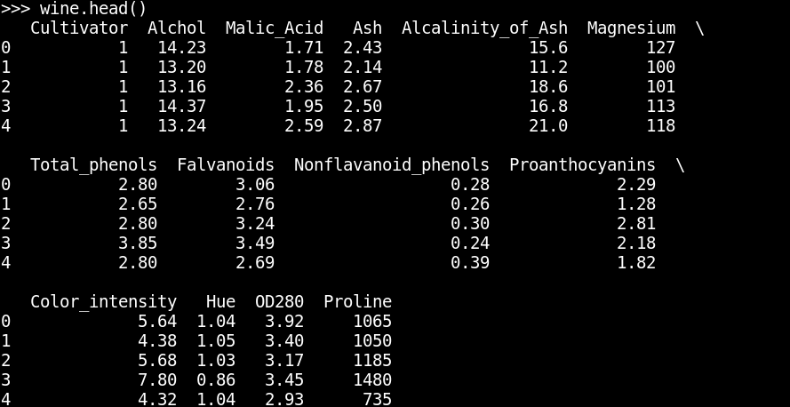
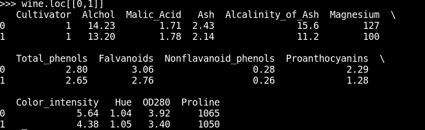
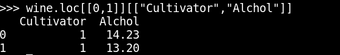

Introducción a Pandas
Posted on Sun 07 January 2018 in Tutorial Python • 1 min read
Pandas es una librería de python para analizar datos, permite multiples entrada de datos.
El artículo se basa en un artículo en inglés Building a neural network with python, y en un tutorial de pandas.
Para este tutorial se usará un conjunto de datos en formato csv sobre vinos (análisis químico para saber el origen de los vinos).
A continuación de describe paso a paso la forma de manejar los datos a partir del archivo wine_data.csv.
El archivo Pandas.py y el Pandas.ipynb lo pueden descargar de github.
Se importa Pandas como pd:
>>> import pandas as pd
Se extraen los datos del archivo csv y se define el nombres de las columnas:
>>> wine = pd.read_csv('wine_data.csv', names = ["Cultivator", "Alchol", "Malic_Acid", "Ash", "Alcalinity_of_Ash", "Magnesium", "Total_phenols", "Falvanoids", "Nonflavanoid_phenols", "Proanthocyanins", "Color_intensity", "Hue", "OD280", "Proline"])
Se muestran los primeros datos:
>>> wine.head()

Se muestran las dimensiones de la tabla:
>>> wine.shape
(178, 14)
Se tienen 178 filas y 14 columnas.
Se muestran las 2 primeras filas de la tabla:
wine.loc[[0,1]]

Se muestran las dos primeras filas y las columnas Cultivator y Alchol
>>> wine.loc[[0,1]][["Cultivator","Alchol"]]

Está introducción es necesaria ya que en futuros artículos se trabajará mucho con la librería pandas.
¡Haz tu donativo! Si te gustó el artículo puedes realizar un donativo con Bitcoin (BTC) usando la billetera digital de tu preferencia a la siguiente dirección: 17MtNybhdkA9GV3UNS6BTwPcuhjXoPrSzV
O Escaneando el código QR desde la billetera: